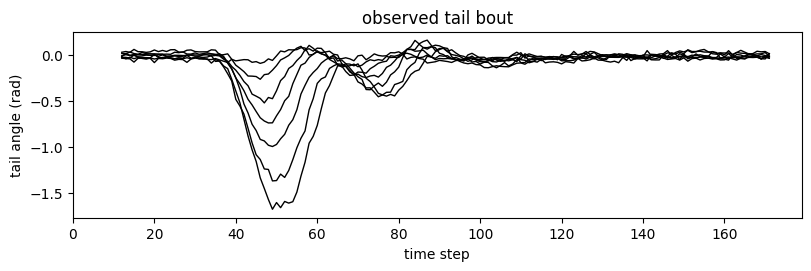
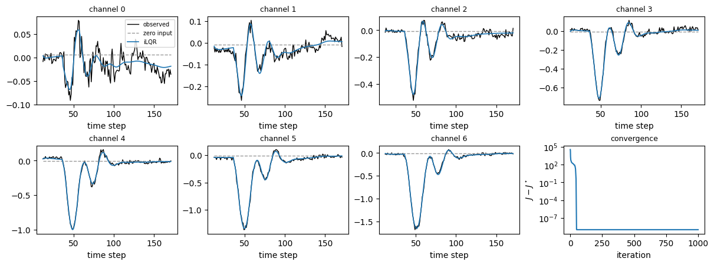
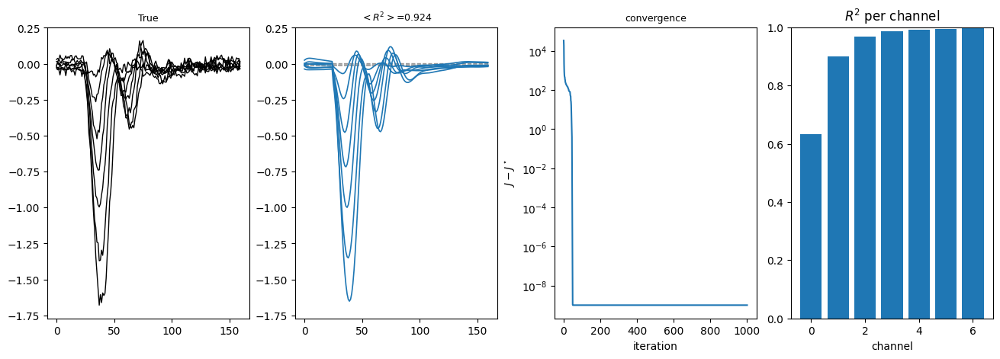
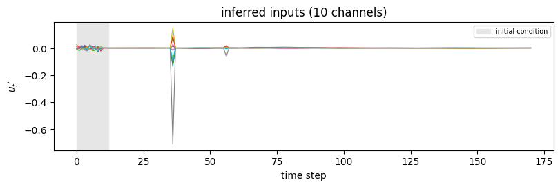
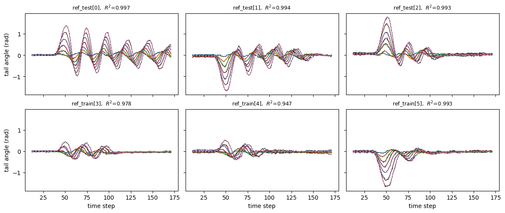
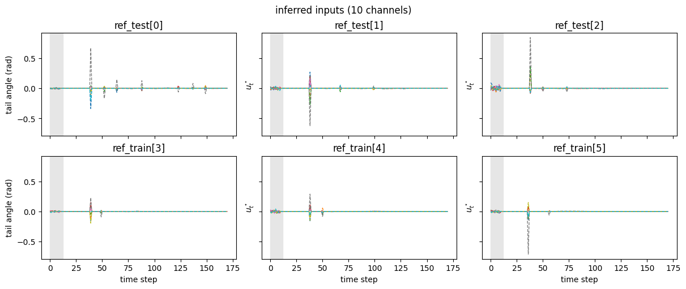

iLQR inference: reconstructing a zebrafish tail bout#
A larval zebrafish swims in short bouts of tail undulation. Here a recurrent generative model of tail kinematics, trained as an iLQR-VAE, explains one recorded bout as the response of a latent dynamical system to a sparse sequence of inputs. Given the trained model, finding the most likely inputs for a new bout is a non-linear optimal control problem, which diffilqrax.ilqr.ilqr_solver solves.
Generative model. Latents \(x_t \in \mathbb{R}^{120}\) evolve under minimal gated unit (MGU2) dynamics driven by inputs \(u_t \in \mathbb{R}^{10}\), and are read out linearly into 7 tail-shape channels,
The heavy-tailed Student-\(t\) prior favours inputs that are mostly small with occasional large kicks. The inferred inputs are the maximiser of \(\log p(u) + \log p(o \mid u)\), so the iLQR cost is the negative log joint: the prior on \(u_t\) plus the likelihood of the observation read out from \(x_t\).
The trained parameters and six bouts, with the inputs found by the original OCaml implementation, are stored in tests/fixtures/ocaml_mgu.npz, where the parity tests also use them.
[1]:
from pathlib import Path
from typing import NamedTuple
import jax
import jax.numpy as jnp
import matplotlib.pyplot as plt
import numpy as onp
from jax.scipy.special import gammaln
from diffilqrax.ilqr import ilqr_solver, ilqr_simulate
from diffilqrax.typs import ModelDims, System, iLQRParams
jax.config.update("jax_enable_x64", True)
Data#
Each bout has \(T = 171\) steps. The first \(n_\text{beg} = 12\) steps only set the initial condition of the latents; the tail is observed for the remaining 160 steps. We take the last bout of the fixture.
[2]:
data = dict(onp.load(Path("../../../tests/fixtures/ocaml_mgu.npz")))
p = {k[len("param_"):]: data[k] for k in data if k.startswith("param_")}
TRIAL, N_BEG = 5, 12
obs = data["saved_tail"][TRIAL] # (160, 7) observed tail
T, m = data["ilqr_u"].shape[1:]
n, n_out = p["uh"].shape[0], p["c"].shape[0]
print(f"T={T}, latents n={n}, inputs m={m}, tail channels={n_out}")
t_obs = onp.arange(obs.shape[0]) + N_BEG
fig, ax = plt.subplots(figsize=(8, 2.6), layout="constrained")
# ax.plot(t_obs, obs + 2.0 * onp.arange(n_out), c="k", lw=1)
_ = ax.plot(t_obs, obs, c="k", lw=1)
_ = ax.set(xlabel="time step", ylabel="tail angle (rad)", title="observed tail bout", xlim=[0,None])
T=171, latents n=120, inputs m=10, tail channels=7

Defining the model#
All parameters go into theta, a NamedTuple pytree. For \(t < n_\text{beg}\) the dynamics load the inputs into disjoint blocks of the latent state, \(x_{t+1} = x_t + B^{(t)\top} u_t\). Afterwards the MGU2 update is
[3]:
class Theta(NamedTuple):
B: jnp.ndarray # (m, n) normalised input weights
uh: jnp.ndarray # (n, n)
uf: jnp.ndarray # (n, n)
bh: jnp.ndarray # (n,)
bf: jnp.ndarray # (n,)
beg_bs: jnp.ndarray # (n_beg, m, n) initial-condition loadings
c: jnp.ndarray # (n_out, n)
bias: jnp.ndarray # (n_out,)
variances: jnp.ndarray # (n_out,)
sigma: jnp.ndarray # (m,) Student-t scale
sigma0: jnp.ndarray # (m,) Gaussian scale of the first n_beg inputs
nu: jnp.ndarray # () degrees of freedom
obs: jnp.ndarray # (T - n_beg + 1, n_out)
k, i, j = onp.meshgrid(onp.arange(N_BEG), onp.arange(m), onp.arange(n), indexing="ij")
theta = Theta(
B=jnp.sqrt(n / m) * p["wh"] / jnp.linalg.norm(p["wh"], axis=1, keepdims=True),
uh=jnp.asarray(p["uh"]),
uf=jnp.asarray(p["uf"]),
bh=jnp.asarray(p["bh"]),
bf=jnp.asarray(p["bf"]),
beg_bs=jnp.asarray(((j // N_BEG == k) & (j % m == i)).astype(float)),
c=jnp.asarray(p["c"]),
bias=jnp.asarray(p["bias"]),
variances=jnp.asarray(p["variances"]),
sigma=jnp.sqrt((p["nu"] - 2.0) / p["nu"]) * p["spatial_stds"],
sigma0=jnp.asarray(p["first_step"]),
nu=jnp.asarray(p["nu"]),
obs=jnp.asarray(obs),
)
def dynamics(t, x, u, theta):
def load(_):
return x + theta.beg_bs[jnp.minimum(t, N_BEG - 1)].T @ u
def mgu(_):
f = jax.nn.sigmoid(theta.bf + theta.uf.T @ x)
h = jnp.tanh(theta.bh + theta.uh.T @ (x * f)) + theta.B.T @ u
return (1.0 - f) * x + f * h
return jax.lax.cond(t < N_BEG, load, mgu, None)
def readout(xs, theta):
return theta.bias + xs @ theta.c.T
The cost: a sparse prior plus the likelihood#
The running cost is the negative log prior of \(u_t\), Gaussian for the initial-condition steps and multivariate Student-\(t\) afterwards, plus the Gaussian negative log likelihood of observation \(t - n_\text{beg}\) given \(x_t\). There is no terminal cost. The Student-\(t\) term is not convex in \(u\), so the problem has local optima; iLQR uses its exact Hessian with Levenberg–Marquardt regularisation.
[4]:
def prior(t, u, theta):
gauss = 0.5 * (m * jnp.log(2 * jnp.pi) + 2 * jnp.sum(jnp.log(theta.sigma0)) + jnp.sum((u / theta.sigma0) ** 2))
nu = theta.nu
cst = gammaln(0.5 * nu) - gammaln(0.5 * (nu + m)) + 0.5 * m * jnp.log(jnp.pi * nu) + jnp.sum(jnp.log(theta.sigma))
student = cst + 0.5 * (nu + m) * jnp.log1p(jnp.sum((u / theta.sigma) ** 2) / nu)
return jnp.where(t < N_BEG, gauss, student)
def likelihood(t, x, theta):
r = theta.obs[jnp.clip(t - N_BEG, 0, theta.obs.shape[0] - 1)] - (theta.bias + theta.c @ x)
nll = 0.5 * (n_out * jnp.log(2 * jnp.pi) + jnp.sum(jnp.log(theta.variances)) + jnp.sum(r**2 / theta.variances))
return jnp.where(t < N_BEG, 0.0, nll)
def cost(t, x, u, theta):
return prior(t, u, theta) + likelihood(t, x, theta)
def costf(x, theta):
return jnp.zeros(())
model = System(cost, costf, dynamics, ModelDims(n=n, m=m, horizon=T, dt=1.0))
params = iLQRParams(x0=jnp.zeros(n), theta=theta)
Solving#
Starting from zero inputs, the solver runs until the KKT residual falls below kkt_tol. A first trial step of \(\alpha = 1\) (alpha_init=2.0) suits this problem better than the cautious default.
[5]:
Us_zero = jnp.zeros((T, m))
solve = jax.jit(lambda u0: ilqr_solver(model, params, u0, max_iter=1000, alpha_init=2.0, kkt_tol=1e-6))
(Xs, Us, _), J_opt, cost_log = solve(Us_zero)
(X_zero, _), J_zero = ilqr_simulate(model, Us_zero, params)
J_ocaml = data["ilqr_cost"][TRIAL]
print(f"cost: {float(J_zero):.1f} (zero input) -> {float(J_opt):.3f} (diffilqrax), OCaml {J_ocaml:.3f}")
print(f"max |u* - u*_OCaml| = {float(jnp.abs(Us - data['ilqr_u'][TRIAL]).max()):.1e}")
cost: 23917.4 (zero input) -> -10403.917 (diffilqrax), OCaml -10403.917
max |u* - u*_OCaml| = 3.1e-07
For this bout both implementations reach the same optimum. On other bouts they can stop in different local optima of the non-convex objective, with costs that agree to about \(10^{-3}\).
Reconstruction#
With zero input the latents relax to a fixed point and the readout is flat; the inferred inputs reproduce the bout. The latents saved by the solver are \(x_0 \dots x_T\), so observation \(j\) is read out from Xs[j + N_BEG].
[6]:
o_zero = readout(X_zero[N_BEG:N_BEG + obs.shape[0]], theta)
o_opt = readout(Xs[N_BEG:N_BEG + obs.shape[0]], theta)
r2 = 1 - jnp.sum((o_opt - obs) ** 2) / jnp.sum((obs - obs.mean(0)) ** 2)
print(f"R^2 of the reconstruction: {float(r2):.3f}")
fig, axes = plt.subplots(2, 4, figsize=(12, 4.4), layout="constrained")
for ch, ax in enumerate(axes.flat[:n_out]):
ax.plot(t_obs, obs[:, ch], c="k", lw=1, label="observed")
ax.plot(t_obs, o_zero[:, ch], c="0.6", ls="--", lw=1, label="zero input")
ax.plot(t_obs, o_opt[:, ch], c="C0", lw=1.2, label="iLQR")
ax.set_title(f"channel {ch}", fontsize=9)
ax.set_xlabel("time step")
axes.flat[0].legend(fontsize=7)
ax = axes.flat[-1]
ax.semilogy(cost_log - cost_log.min() + 1e-9, c="C0")
ax.set(xlabel="iteration", ylabel=r"$J - J^\star$", title="convergence")
ax.title.set_fontsize(9);
R^2 of the reconstruction: 0.993

[7]:
# o_opt = onp.asarray(readout(theta, Xs))[N_BEG - 1 :]
# o_zero = onp.asarray(readout(theta, X_zero))[N_BEG - 1 :]
r2 = 1 - ((o_opt - obs) ** 2).sum(0) / ((obs - obs.mean(0)) ** 2).sum(0)
fig, axes = plt.subplots(1, 4, figsize=(13, 4.6), layout="constrained")
axes[0].plot(obs[:, :], c="k", lw=1, label="observed")
axes[0].set_title(f"True", fontsize=9)
axes[1].plot(o_zero[:, :], c="0.6", ls="--", lw=1, label="zero input")
axes[1].plot(o_opt[:, :], c="C0", lw=1.2, label="iLQR")
axes[1].set_title(f"$<R^2>$={r2.mean(0):.3f}", fontsize=9)
axes.flat[-1].bar(range(n_out), r2)
axes.flat[-1].set(ylim=(0, 1), xlabel="channel", title="$R^2$ per channel");
axes[0].sharey(axes[1])
ax = axes.flat[2]
ax.semilogy(cost_log - cost_log.min() + 1e-9, c="C0")
ax.set(xlabel="iteration", ylabel=r"$J - J^\star$", title="convergence")
ax.title.set_fontsize(9);

The inferred inputs are sparse, as the Student-\(t\) prior intends: one large kick that launches the bout, a smaller one a few beats later, and near-zero inputs elsewhere. The latent dynamics generate the undulation on their own.
[8]:
fig, ax = plt.subplots(figsize=(8, 2.6), layout="constrained")
ax.plot(Us, lw=0.8)
ax.axvspan(0, N_BEG, color="0.9", label="initial condition")
ax.set(xlabel="time step", ylabel=r"$u^\star_t$", title="inferred inputs (10 channels)")
ax.legend(fontsize=7);

How to adapt#
Another bout: change
TRIAL; onlytheta.obsdepends on the bout, sosolveis reused without recompiling.Many bouts at once: solve them as one batch with
diffilqrax.batch, as in the next section; see batched iLQR for strategies and timings.Learning the model: the solution is differentiable with respect to
theta(see gradients through iLQR), which is how an iLQR-VAE is trained.A Gaussian prior makes the cost convex in \(u\) for fixed latents and typically converges in fewer iterations, at the price of less sparse inputs.
Extension: many bouts at once#
Only theta.obs changes from bout to bout, so all six bouts in the fixture can be solved as one batch inside one compiled program. batch.batched_ilqr_solver takes the batch axes as in jax.vmap: 0 for the batched leaf theta.obs, None for the shared ones. Its default strategy is jax.vmap.
The solver’s iterations, regularisation retries and line search are lax.while_loops, so under vmap the batch stops as soon as its slowest bout has converged. Bouts that finish early wait for it. On CPU, strategy="map" solves the bouts one after another instead; with several devices, strategy="shard" splits the batch across them. The batched iLQR notebook compares the strategies.
[9]:
from diffilqrax import batch
all_obs = jnp.asarray(data["saved_tail"]) # (6, 160, 7)
obs_axes = iLQRParams(x0=None, theta=jax.tree.map(lambda _: None, theta)._replace(obs=0))
solve_all = jax.jit(
lambda obs_batch: batch.batched_ilqr_solver(
model, params._replace(theta=theta._replace(obs=obs_batch)), Us_zero, (obs_axes, None),
max_iter=1000, alpha_init=2.0, kkt_tol=1e-6,
)
)
(Xs_all, Us_all, _), J_all, log_all = solve_all(all_obs)
o_all = jax.vmap(lambda xs: readout(xs[N_BEG:N_BEG + all_obs.shape[1]], theta))(Xs_all)
r2_all = 1 - jnp.sum((o_all - all_obs) ** 2, axis=(1, 2)) / jnp.sum((all_obs - all_obs.mean(1, keepdims=True)) ** 2, axis=(1, 2))
log_all = onp.asarray(log_all)
# once converged the cost history repeats the final cost
iters = [int(onp.nonzero(h != h[-1])[0].max(initial=-1)) + 1 for h in log_all]
print(f"{'bout':>14s} {'J OCaml':>11s} {'J diffilqrax':>12s} {'rel diff':>9s} {'R^2':>6s} {'iters':>5s}")
for b in range(all_obs.shape[0]):
J_oc = data["ilqr_cost"][b]
label = f"{data['source'][b]}[{b}]"
print(f"{label:>14s} {J_oc:11.3f} {float(J_all[b]):12.3f} {(float(J_all[b]) - J_oc) / abs(J_oc):9.1e} "
f"{float(r2_all[b]):6.3f} {iters[b]:5d}")
bout J OCaml J diffilqrax rel diff R^2 iters
ref_test[0] -10215.129 -10188.690 2.6e-03 0.997 54
ref_test[1] -10297.255 -10302.552 -5.1e-04 0.994 51
ref_test[2] -10270.089 -10263.757 6.2e-04 0.993 77
ref_train[3] -10545.906 -10544.964 8.9e-05 0.978 40
ref_train[4] -10312.940 -10313.109 -1.6e-05 0.947 40
ref_train[5] -10403.917 -10403.917 -9.0e-14 0.993 53
Bouts where the relative cost difference is not zero stopped in a different local optimum from OCaml, as noted above. Each panel overlays the seven observed channels (black) with their reconstruction (colour).
[10]:
fig, axes = plt.subplots(2, 3, figsize=(12, 5), sharex=True, sharey=True, layout="constrained")
for b, ax in enumerate(axes.flat):
ax.plot(t_obs, all_obs[b], c="k", lw=0.8)
for ch in range(n_out):
ax.plot(t_obs, o_all[b, :, ch], c=f"C{ch}", lw=1, ls="--")
ax.set_title(f"{data['source'][b]}[{b}], $R^2$={float(r2_all[b]):.3f}", fontsize=9)
for ax in axes[-1]:
ax.set_xlabel("time step")
for ax in axes[:, 0]:
ax.set_ylabel("tail angle (rad)")

[11]:
fig, axes = plt.subplots(2, 3, figsize=(12, 5), sharex=True, sharey=True, layout="constrained")
for b, ax in enumerate(axes.flat):
for ch in range(m):
ax.plot(Us_all[b, :, ch], c=f"C{ch}", lw=1, ls="--")
ax.set_title(f"{data['source'][b]}[{b}], $R^2$={float(r2_all[b]):.3f}", fontsize=9)
ax.set(
ylabel=r"$u^\star_t$",
title=f"{data['source'][b]}[{b}]",
)
ax.axvspan(0, N_BEG, color="0.9", label="initial condition")
for ax in axes[-1]:
ax.set_xlabel("time step")
for ax in axes[:, 0]:
ax.set_ylabel("tail angle (rad)")
fig.suptitle("inferred inputs (10 channels)")
[11]:
Text(0.5, 0.98, 'inferred inputs (10 channels)')
